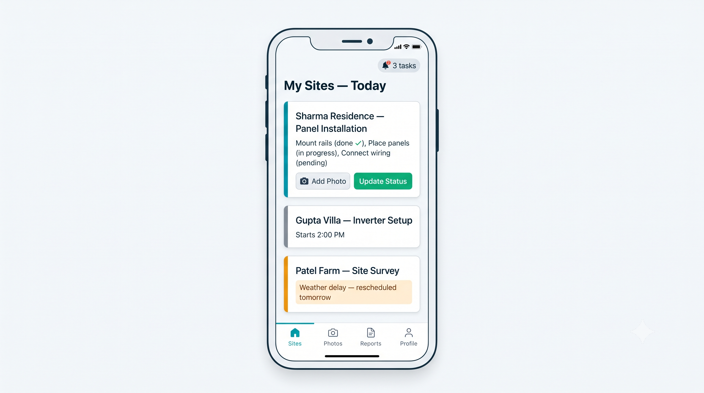

Built for rooftops, not desks.
Go gives installers a clear task list and gives the office a live view of every site.
For installers, site teams and EPC managers.

Run the site from your phone.
Site tasks
Clear instructions, deadlines and checklists for every team.
Daily photo proof
Upload photos from the roof. The office sees them the same day.
Status updates
Mark progress as it happens.
Delay reasons
Log weather, material or labour delays when they occur, so plans can change early.
Verification
The office reviews photos and updates before a step closes.
All sites in one view
See every active site, its status and its team.
Built on Atlas.
Go receives design data from Studio, which is built on Atlas models. Your team installs what was designed.
See Go at work.
A short walkthrough. No login needed.
Get started in three steps.
Sign up with your work email
Set up your profile
Create your first project
Common questions
Who is Go for?
Installers, site supervisors and EPC managers.
What does it cost?
Free during beta.
Does it work with a weak network?
Yes. Updates and photos save on your phone and sync when you are back online.
Is there a mobile app?
Yes. Android and iOS.
Where do the photos go?
To the project record, visible to the office team.
Next in the flow: SCADA SCADA watches the plant after commissioning.